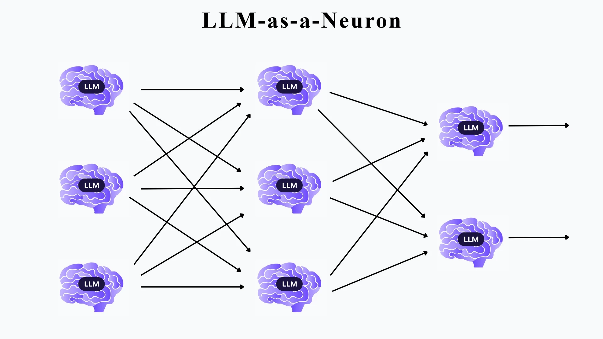

LLM-as-a-Neuron: Replacing neurons in a neural network with reasoning models.
On this page

We built neural networks where every neuron is a reasoning model that computes its own output and tunes its own weights, seeing only the loss value and neighbouring weights: no gradients, no targets, no task description. They learned on every task we tested, where even Adam and gradient descent were stuck. With a weak reasoner (Haiku) they were no better than random search but GPT-6 Astra beat 88% of random-search runs on the hardest task. Also we observe that models could guess the task without being told at all, propose their own activation functions, etc.
01The idea
A neuron in a neural network is simple. It works by multiplying each input by a weight, add a bias, squash the result through an activation function. Training adjusts those weights using gradients, the exact slope of the error with respect to every weight.
Seeing how good recent models can perform goal driven tasks, we asked a different question. What if every neuron were a reasoning model? Each one would do its own arithmetic, and each one would decide for itself how to change its weights. It would get no gradient, no targets, and no description of the task. Just one number after every step: the loss value, with “lower is better” and it’s neighbouring weights.
- The networks learned well on every task, including ones where Adam and gradient descent got stuck completely.
- With a weak reasoning model, the LLM neurons were about as good as random trial and error.
- With a strong reasoning one (GPT-6 Astra), they fitted the hardest task better than 88% of random-search runs.
- And along the way, without ever being told what the task was. The models could form hypothesis about the tasks.
02How an LLM neuron works
Every neuron has two jobs, and an LLM does both.
Job 1: compute the output (the forward pass). The neuron gets its inputs, weights, bias and activation, and must reply with one number. We used Claude Haiku 5.5 for this, because it is cheap and strong enough for these calculations. A real exchange from one of our runs:
inputs: [0.13, -1.01]
weights: [-0.393, -0.047]
bias: 0.167
activation: reluANSWER: 0.1634That is correct: −0.393 × 0.13 + (−0.047) × (−1.01) + 0.167 = 0.1634, and ReLU leaves positive numbers alone. A run makes about 9,000 to 10,000 of these calls, and identical questions are answered from a cache so the network always gives the same output for the same weights.
Job 2: decide how to change (the update). After each step, every neuron gets a briefing and replies with new parameters as JSON. The briefing contains its current weights and everyone else’s, what it received and output on each example, a table of every setting it has tried with the loss each one produced, how much influence each neuron has on the final output. A sample shown below:
Neuron replies{"weights": [1.0, -1.0], "bias": 0.0, "activation": "tanh"}The activation is a parameter the neuron chooses, from relu, tanh, sigmoid, abs, square, step or anything it writes as a formula.
Neurons update one at a time. After each proposal we re-measure the loss on the whole network. If the loss went up, the change is undone automatically, and the next neuron sees exactly what happened:
L0N3: weights [0.009, -0.436], bias 0.512, abs
-> weights [0.009, -0.436], bias 0.112, tanh
=> loss 0.1896 -> 0.2047 (+0.0151) REVERTED (raised the loss)The loss itself is computed in plain Python. The neurons are never told its formula nor the targets nor the task.
03What the neurons said
The best part of this experiment is that every decision comes with an explanation. All quotes below are the reasoning text the models returned before each update which are copied from our logs. For GPT-6 Astra this is a summary of its reasoning.
Astra worked out the task without being told
The neurons were never told what the task was. Their prompts contain weights, inputs, outputs and a loss number, nothing more. Partway through training on our two-moons dataset, one of Astra’s hidden neurons wrote:
“It seems I’m dealing with an unknown task that’s likely about classifying moons.”
Others described “binary targets” and “low versus high binary targets”. It was not always right: another neuron guessed “a classification task involving circles”, a different classic benchmark. But it was reading the shape of the data and the behaviour of the loss and forming a hypothesis, which is more than any gradient does.
The output neuron then acted on that hypothesis. Reasoning that the targets were binary, it invented its own activation function:
“Clipped ReLU could be an interesting option… I’m considering using the formula min(1, max(0, x))”
That keeps predictions between 0 and 1, exactly what you want for 0/1 labels. Nobody suggested it. Later neurons tried more of their own designs: x*x - 1, a leaky ReLU written as max(0, x) + 0.3*min(0, x), and 1 / (1 + exp(-x + 0.25*x*x)).
Nemotron diagnosed a useless neuron in one look
One hidden neuron started with a step activation that output 1 for nearly every point. Nemotron 3 Ultra's reasoning, at the very first update:
“With current weights and bias, we output 1 for almost all inputs except a few… That means our neuron is almost always 1. That might not be discriminative enough.”
It switched to tanh with weights [1.0, −1.0], a feature that compares the two inputs. The loss dropped from 0.856 to 0.167 in that single move.
Haiku found the XOR trick
On XOR, which needs to treat “one input on” differently from “both on”, a Haiku neuron noticed what its own weights were doing:
“L0N1 behaves like a difference of the inputs, x1 minus x2, which looks fine for an XOR-like target.”
It never saw a target. It guessed the task from the loss and the inputs, as Astra did later.
04How they moved their weights
The model choosing the updates mattered more than anything else we changed. We kept Haiku for the arithmetic and swapped only the model that decides the new weights.

Each model had a recognisable style:
- Typical biggest change per update
- 0.09
- Updates that lowered the loss
- 11 of 100
- Activation changes kept
- 3
Haiku nudged. Its typical move was under 0.1. Most nudges made things slightly worse and were undone, so it nudged even less, and training froze at step 3.
- Typical biggest change
- 1.00
- Updates that lowered the loss
- 15 of 100
- Activation changes kept
- 14
Nemotron leapt. Once we added a rule forcing big moves after two failed updates, Nemotron made changes of 1.0 or more and switched activations constantly. Most leaps missed, but the few that landed were large: the single best one cut the loss by 80%.
- Typical biggest change
- 0.50
- Updates that lowered the loss
- 23 of 100
- Activation changes kept
- 4, including its own clipped ReLU
Astra aimed. Its moves were mid-sized and better chosen: nearly one in four lowered the loss, twice Haiku’s rate. It often changed one thing at a time and explained which earlier attempt it was building on (“Prior attempts with .3 resulted in failure, so I should choose .5”).
Three failure patterns showed up repeatedly, and each needed a fix: neurons going round in circles (a bias that went 0.5 → 0.7 → 0.5 → 0.3 → 0.5, five times over), neurons being cut off when a downstream neuron set their weight to 0, and the timidity above. Giving each neuron a table of everything it had tried, a measure of its influence, and a rule against tiny moves dealt with each in turn.
05The experiments
We ran four tasks, from tiny to small:
XOR
output 1 when exactly one of two inputs is on.
3-bit parity
output 1 when an odd number of three inputs is on.
Moons
which of two interlocking half-moons a 2D point belongs to.
Moons (larger)
same but with more points and more noise.
The moons tasks have a separate test set the neurons never see, so we can check whether a network learned the shape or just memorised the training points.
Making the comparison fair
The obvious comparison, LLM neurons against normal training, is not fair: normal training (backpropagation with gradient descent or Adam) sees the loss formula and the targets, and our neurons see neither. So our main baseline was random hill climbing, a method with exactly the same information and rules:
- the same network, the same starting weights and the same data
- only the loss value, never gradients or targets
- updates one neuron at a time with the same automatic undo
The only difference is who proposes each change: an LLM that reasons about it, or random noise. If the LLM is no better than noise that means its reasoning is not helping.
Because one random-search run can be lucky or unlucky, we ran it 200 times from the same start and reported where the LLM run would rank among them. We also ran plain gradient descent and Adam, from the same start and from 50 random starts, as a reference for what full information achieves.
One caveat matters for everything that follows: each LLM result is a single run due to constraints.
06Results
After 20 steps, LLM neurons beat gradient methods wherever those got stuck and roughly matched random search until a strong model took the lead on the largest task. Training error (lower is better), with the share of 200 random-search runs the LLM run beat:
| Task | Model choosing the weights | LLM neurons (training error) | Random search, typical run | LLM beats this share of random runs | Adam from the same start |
|---|---|---|---|---|---|
| XOR | Haiku | 0.149 | 0.187 | 0.500 (stuck) | |
| 3-bit parity | Haiku | 0.173 | 0.174 | 0.197 | |
| Moons | Haiku | 0.090 | 0.068 | 0.056 | |
| Moons, larger | Haiku | 0.244 | 0.078 | 0.500 (stuck) | |
| Moons, larger | Nemotron 3 Ultra | 0.084 | 0.078 | 0.500 (stuck) | |
| Moons, larger | GPT-6 Astra | 0.065 | 0.078 | 0.500 (stuck) |
Three things stand out.
Gradient methods can get completely stuck; reasoning neurons don’t. From our random starting weights, the output neuron was a ReLU receiving negative input on every example, and one hidden neuron used a
stepactivation. Both have zero slope, so every gradient was 0: Adam and gradient descent never moved from 0.500. The LLM neurons simply looked at the situation and changed the activations. To be fair, random search escapes these traps too, so this advantage comes from not needing gradients at all.Smarter update models fit faster. With Haiku, the LLM was no better than noise on average. With GPT-6 Astra on the largest task, it reached a training error of 0.081 by step 5, when the typical random-search run was still at 0.151.
On new data, the picture is subtler. On the held-out test points, Nemotron got 82.5% right (33 of 40) and Astra 77.5% (31 of 40), against 80% for the typical random-search run. Both beat about two-thirds of random-search runs on test error. But when we compared networks with the same training error, Nemotron’s advantage disappeared: it had simply stopped at a point where test error happens to be low. Astra still did better than 68% of comparable random-search networks, in a single run.
Given enough steps, ordinary training still wins easily. With standard activations and 2,000 steps, plain gradient descent reached a median of 95% test accuracy on the larger moons task across 50 random starts.
07How this differs from earlier work
None of the ingredients is new on its own. What we did not find in earlier work is the combination: one reasoning agent per neuron, doing that neuron’s arithmetic and tuning its own weights and activation, coordinating with its neighbours, and never told what the task is.
OPRO
one LLM improves a solution from a history of past attempts and scores, including linear-regression weights. We use one LLM per neuron, each tuning only itself; the task is hidden; and the LLM also computes the output.
Deep Language Networks
layers of LLMs whose prompts act as the weights. Our neurons pass numbers, not text, and have numeric weights.
Agent Symbolic Learning
written feedback flows backward through LLM pipelines to improve prompts. We tune numbers from a single loss value, with no written feedback.
NeuroGen
an LLM writes a network’s weights directly, without gradient training. We iterate instead: propose, measure, keep or undo, repeat.
Weight-Space Programming
LLMs directly inspect, generate, and modify neural-network weights without gradients. It uses an LLM to program networks, rather than one reasoning agent per numerical neuron as we do.
The closest relative is OPRO run separately inside every neuron. The experiment above is exactly what tests whether that decentralisation, plus reasoning, buys anything over the plain loop with random proposals.
08How we could use this
Optimising things that have no gradient.
Systems with step functions, discrete choices, rules, simulators or physical hardware cannot be trained by backpropagation. Our networks with step activations were exactly that case, and reasoning neurons trained them anyway.
Black-box objectives.
When the only feedback is a score (a human rating, a test pass rate, a business metric), reasoning optimisers can form hypotheses about what the score rewards, as Astra did when it guessed the task was classifying moons.
Training you can audit.
Every weight change here comes with a written reason. For small, high-stakes models, such as controllers or scoring rules, a log of why each parameter moved is worth a lot.
Designing activations and structure.
Our neurons invented a clipped ReLU, a leaky ReLU and several custom functions on their own. Pointed at that job deliberately, an LLM could propose activations and architectures for gradient training to finish.
A coach for ordinary training.
Gradient training fails in recognisable ways: dead neurons, plateaus, bad starting points. A reasoning model watching the run could spot those and intervene, then hand back to the fast optimiser.
A testbed for cooperating agents.
A network is a clean, measurable setting for studying how many AI agents coordinate when each sees only part of the picture.
Thanks for reading!
These results are early findings from ongoing experiments, and there’s more to come. If you have ideas about this method, spot something wrong, or just want to talk, please reach out. I’d love to connect.
Reach me out:
~Drafted with the help of AI Tools and my sleepy brain.